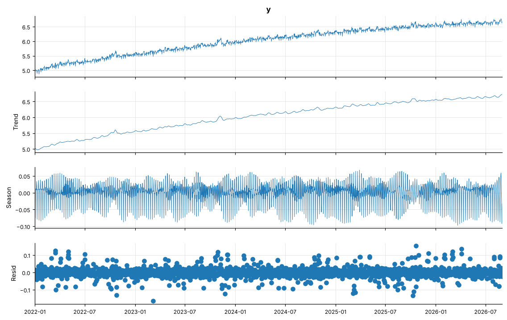
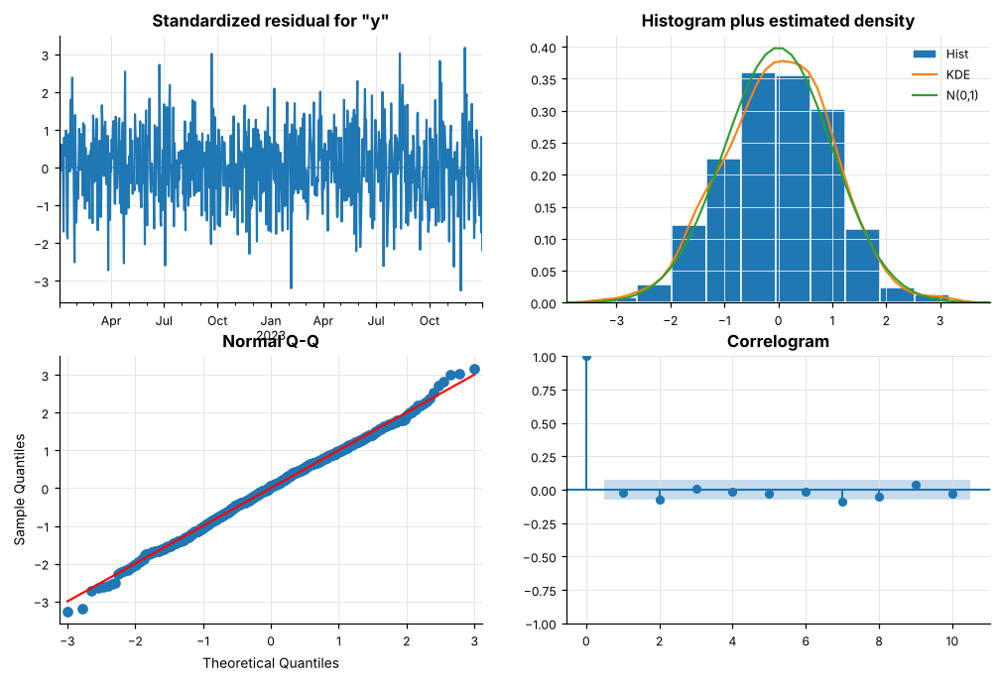
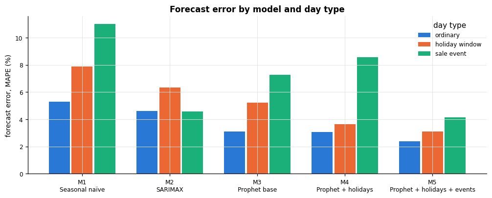
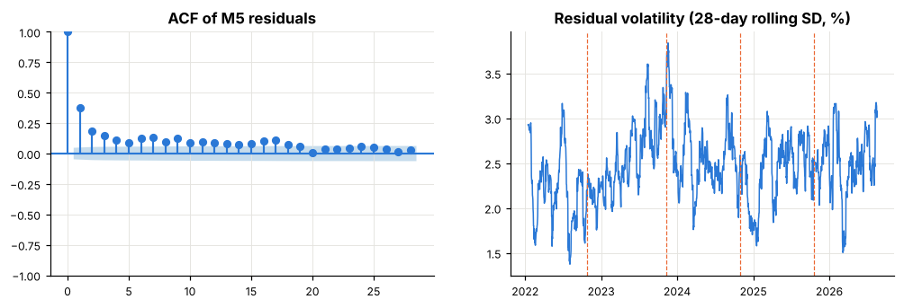

Prophet Model Implementation for Digital Payment Volume Forecasting with Holiday and Event Effects
Applied Time Series Analysis (ATSA): Group 2
Roll no.
SAP ID
Name
E004
70382200055
Rohan Dedhia
E026
70382200042
Duncan D’lima
E020
70382200007
Sanaz Katpitia
Date: 22.10.206
Overview
Problem. UPI processes hundreds of millions of payments a day, and daily volume is not smooth. It rises on weekends and paydays, ramps up before Diwali, dips on national holidays and jumps during e-commerce sales. Daily forecasts are needed for server capacity, fraud-monitoring baselines and settlement liquidity, and a forecast that ignores the calendar is wrong on exactly the busiest days.
What we do. We forecast daily UPI transaction volume with Prophet and test how much the forecast improves when Prophet is told about holidays (Diwali, Holi, Eid, Raksha Bandhan, national holidays) and events (an e-commerce sale, payday and month-end). We compare against a seasonal naïve baseline and SARIMAX.
Data. NPCI publishes UPI volume monthly only, so we built a synthetic daily series anchored to the real NPCI monthly totals (Jan 2022 – Aug 2026), with holiday and event effects of known size. Because the true effects are known, we can also check whether Prophet recovers them. All daily values are synthetic; only the monthly totals are real. Results therefore evaluate the modelling approach under our stated simulation assumptions, not the real causal effect of festivals on UPI. Details are in DATA.md.
Questions
Does adding holidays and events to Prophet improve forecast accuracy, and on which days?
Does Prophet recover the true size of each holiday and event effect?
How does Prophet compare with SARIMAX?
Section
Content
1
Data
2
Exploratory data analysis
3
Models
4
Forecast evaluation
5
Holiday and event effects
6
Residual diagnostics
7
Final forecast
8
Conclusions
1. Data
1.1 Setup
Show code
import json, logging, warnings, itertools, timefrom pathlib import Pathimport numpy as npimport pandas as pdimport matplotlib.pyplot as pltimport matplotlib.dates as mdatesfrom joblib import Parallel, delayedfrom prophet import Prophetfrom statsmodels.tsa.statespace.sarimax import SARIMAXfrom statsmodels.tsa.seasonal import STLfrom statsmodels.tsa.stattools import adfuller, kpss, acffrom statsmodels.stats.diagnostic import acorr_ljungbox, het_archfrom statsmodels.graphics.tsaplots import plot_acf, plot_pacfdef quiet():"""Silence Stan/Prophet log messages (also called inside parallel workers).""" warnings.filterwarnings("ignore")for name in ("cmdstanpy", "prophet", "prophet.plot"): logging.getLogger(name).disabled =Truequiet()DATA, OUT = Path("data"), Path("results")OUT.mkdir(exist_ok=True)N_JOBS =-1# run cross-validation folds on all CPU coresRANDOM_SEED =42np.random.seed(RANDOM_SEED)C_ACTUAL, C_MODEL, C_TRUTH, C_ALT, C_GRID ="#2a78d6", "#eb6834", "#52514e", "#1baf7a", "#e4e3df"plt.rcParams.update({"figure.dpi": 110, "savefig.dpi": 150, "savefig.bbox": "tight","axes.spines.top": False, "axes.spines.right": False, "axes.grid": True,"grid.color": C_GRID, "grid.linewidth": 0.6, "axes.titlesize": 11, "axes.titleweight": "bold","axes.labelsize": 9, "xtick.labelsize": 8, "ytick.labelsize": 8,"legend.fontsize": 8, "legend.frameon": False, "lines.linewidth": 1.4,})def show(fig, name): fig.savefig(OUT /f"{name}.png") plt.show()
1.2 Load the data
upi_monthly.csv: the real NPCI monthly totals, scraped from npci.org.in.
synthetic_daily.csv: the daily series built from them:
y is daily volume in millions of transactions.
true_effect is the injected holiday and event effect on each day, which is our ground truth.
prophet_holidays.csv: festival and holiday dates with their windows.
holidays.csv: the gazetted national holiday list.
truth.json: every injected parameter, including the sale dates.
How the daily series is built (short version):
A smooth trend through NPCI’s monthly averages.
Multiplied by weekday, payday, holiday, sale and noise effects.
Every month then sums exactly to the NPCI total, except five festive months.
The five festive months are not forced to match. Forcing them pushed their ordinary days about 5% below trend and hid half of the Diwali effect. We found this in the first version of our generator and fixed it (DATA.md §3.4).
Show code
df = pd.read_csv(DATA /"synthetic_daily.csv", parse_dates=["ds"])monthly = pd.read_csv(DATA /"upi_monthly.csv", parse_dates=["month"])festivals = pd.read_csv(DATA /"prophet_holidays.csv", parse_dates=["ds"])national = pd.read_csv(DATA /"holidays.csv", parse_dates=["ds"])truth = json.load(open(DATA /"truth.json"))# Basic data integrity checks: fail early if the input series is not usable.required_cols = {"ds", "y", "is_payday", "is_monthend", "true_effect"}missing_cols = required_cols -set(df.columns)if missing_cols:raiseValueError(f"synthetic_daily.csv is missing columns: {sorted(missing_cols)}")if df["ds"].duplicated().any():raiseValueError("Duplicate dates found in synthetic_daily.csv")ifnot df["ds"].is_monotonic_increasing: df = df.sort_values("ds").reset_index(drop=True)if df["y"].isna().any() or (df["y"] <=0).any():raiseValueError("Daily volume must be positive and non-missing for log-scale models")expected_dates = pd.date_range(df.ds.min(), df.ds.max(), freq="D")iflen(expected_dates) !=len(df) ornot pd.DatetimeIndex(df.ds).equals(expected_dates):raiseValueError("Daily series has missing or irregular dates")print(f"{len(df)} days, {df.ds.min().date()} to {df.ds.max().date()}")df[["ds", "y", "is_payday", "is_monthend", "true_effect"]].head()
1704 days, 2022-01-01 to 2026-08-31
ds
y
is_payday
is_monthend
true_effect
0
2022-01-01
155.413512
1
0
0.0
1
2022-01-02
142.543802
1
0
0.0
2
2022-01-03
149.680703
1
0
0.0
3
2022-01-04
150.994083
1
0
0.0
4
2022-01-05
150.568082
1
0
0.0
1.3 Holidays and events
Holidays are recurring public or cultural dates. Each one gets a window of days around it, because spending changes before and after the day itself:
Holiday
Window (days)
Injected effect
Diwali
−10 to +3
ramp up to +20% on Dhanteras and Diwali eve, then a dip
Holi
−2 to +1
+8% on the two days before, −10% on the day
Eid al-Fitr
−3 to 0
ramps up to +6%
Raksha Bandhan
−3 to 0
ramps up to +5%
Republic Day, Independence Day, Gandhi Jayanti
0
−5%
Other gazetted holidays (Dussehra, Christmas, …) are also given to the model as single days. Their true effect is zero, so they test whether the model wrongly invents effects.
Events are non-holiday calendar effects:
E-commerce sale. One 4–6 day sale per year, about 2½ weeks before Diwali, lifting volume by 8–12%. Sale dates are announced in advance by retailers, so they can be supplied to a forecast. The dates come from truth.json.
Payday. Days 1–5 of each month, when salaries are credited: +6%.
Month-end. The last 2 days of each month: +3%.
Each day is labelled for the evaluation: holiday window, sale event, or ordinary.
Show code
sale_rows = truth["hidden_sale_NOT_given_to_prophet"] # the generator's name for the sale; we now use it as an eventsale = pd.DataFrame({"holiday": "ecommerce_sale","ds": pd.to_datetime([s["start"] for s in sale_rows]),"lower_window": 0,"upper_window": [s["days"] -1for s in sale_rows]})national_single = (national.assign(lower_window=0, upper_window=0) [["holiday", "ds", "lower_window", "upper_window"]])national_single = national_single[~national_single.ds.isin(set(festivals.ds))] # a window replaces the same-date single dayHOLIDAYS = pd.concat([festivals, national_single], ignore_index=True)HOLIDAYS_AND_EVENTS = pd.concat([HOLIDAYS, sale], ignore_index=True)def window_days(table): days =set()for _, r in table.iterrows(): days |=set(pd.date_range(r.ds + pd.Timedelta(days=int(r.lower_window)), r.ds + pd.Timedelta(days=int(r.upper_window))))return dayssale_days = window_days(sale)df["day_type"] = np.select([df.ds.isin(sale_days), df.ds.isin(window_days(festivals))], ["sale event", "holiday window"], "ordinary")DAY_TYPES = ["ordinary", "holiday window", "sale event"]sale
Volume grows about fivefold over the period, from about 150 to about 800 million transactions a day.
On the log scale the growth is close to linear, gently slowing.
Festival seasons (dashed lines: Diwali) show visible bumps.
The weekly up-and-down pattern grows with the level. That is the sign of multiplicative seasonality.
2.2 STL decomposition (log scale, weekly period)
Show code
stl = STL(np.log(df.set_index("ds").y), period=7, robust=True).fit()fig = stl.plot()fig.set_size_inches(11, 7)for a in fig.axes:for line in a.get_lines(): line.set_linewidth(0.6)show(fig, "2_2_stl")

Reading:
The weekly component is large and stable, with Sunday about 7–9% below the weekly mean.
The festival seasons appear as bumps in the trend panel each Oct–Nov. A two-week festival is long enough for STL to absorb it into the trend, so a plain decomposition cannot separate festivals from growth. That is why holidays have to be modelled explicitly.
2.3 Stationarity and autocorrelation
ADF test: the null hypothesis is a unit root (non-stationary).
KPSS test: the null hypothesis is stationarity.
A series counts as stationary only when both agree.
Log volume is non-stationary; one difference makes it stationary. So SARIMAX uses \(d = 1\).
The ACF has strong spikes at lags 7, 14, 21, 28, a weekly cycle, so the seasonal period is \(s = 7\). The spikes barely decay, so the weekly pattern is stable. We model it with seasonal AR/MA terms (\(D = 0\)).
The large negative lag-1 value points to low-order non-seasonal AR/MA terms.
2.4 Weekday and day-of-month profiles
Each day is divided by a centred 28-day average (to remove the trend). Holiday and sale days are left out, then the ratios are averaged.
Weekdays: Saturday is about 3% above average and Sunday about 6.5% below.
Paydays: days 1–5 are about 4.5% above the 28-day mean, and the last two days of the month about 1.7%.
Both are recurring calendar events that the models should capture.
3. Models
#
Model
Holidays
Events (payday, month-end, sale)
M1
Seasonal naïve: the same weekday last week
–
–
M2
SARIMAX, order chosen by AIC
✓ (dummies)
✓ (dummies)
M3
Prophet, base: trend + weekly + yearly
–
–
M4
Prophet + holidays
✓
–
M5
Prophet + holidays + events
✓
✓
M3 → M4 → M5 is the core comparison of this project: each step adds one kind of calendar knowledge. SARIMAX gets the full calendar information (the same as M5), so the Prophet vs SARIMAX comparison is fair.
piecewise-linear trend; its slope can change at “changepoints”
\(s(t)\)
seasonality as Fourier series (weekly, yearly)
\(h(t)\)
holiday/event effects: one coefficient per day of each window, so Prophet learns the shape of a festival (e.g. Diwali’s ramp)
\(x(t)\)
extra regressors (payday, month-end), with coefficients \(\beta\)
Why these choices:
Multiplicative mode: volume grew about 5×, and a festival adds a percentage of current volume, not a fixed count.
Payday and month-end as regressors: they are known in advance, and a 30.5-day Fourier term cannot line up with calendar months.
A sale with a different length each year: each year gets its own window length via upper_window.
Settings:
changepoint_prior_scale = 0.005 gives a smooth trend.
yearly_seasonality = 3 is a low-order yearly curve. A flexible yearly curve partly absorbs Diwali, because Diwali always falls in Oct–Nov.
These two values performed best in a preliminary cross-validated search. The holiday and seasonality prior scales made almost no difference, so they stay at Prophet’s defaults.
3.2 SARIMAX: design matrix and order selection by AIC
SARIMAX here is a regression with seasonal ARIMA errors on log volume. Its exogenous variables carry the same calendar information as Prophet M5:
one 0/1 dummy per (holiday or sale, day of window);
payday and month-end dummies;
yearly Fourier terms.
trend="c" adds a drift term (constant growth after differencing).
The order is chosen with the course’s optimize_SARIMAX procedure:
fit every \((p, q, P, Q)\) with \(p, q \in \{0,1,2\}\), \(P, Q \in \{0,1\}\), \(d = 1\), \(D = 0\), \(s = 7\) (from Section 2.3);
keep the lowest AIC.
The search uses only the first two years (2022–2023), so nothing from the evaluation period influences the choice. 36 models are fitted in parallel, which takes a few minutes.
Show code
def calendar_exog(dates, table=HOLIDAYS_AND_EVENTS, fourier_k=3):"""One dummy per (holiday/event, day offset) + payday + month-end + yearly Fourier terms.""" dates = pd.DatetimeIndex(dates) X = {}for _, r in table.iterrows():for k inrange(int(r.lower_window), int(r.upper_window) +1): col =f"{r.holiday}_{k:+d}" X.setdefault(col, np.zeros(len(dates))) X[col][dates == r.ds + pd.Timedelta(days=k)] =1.0 X = pd.DataFrame(X, index=dates) X["is_payday"] = (dates.day <=5).astype(float) X["is_monthend"] = (dates.day > dates.days_in_month -2).astype(float) t = dates.dayofyear.values /365.25for k inrange(1, fourier_k +1): X[f"sin{k}"], X[f"cos{k}"] = np.sin(2* np.pi * k * t), np.cos(2* np.pi * k * t)return XX_all = calendar_exog(pd.date_range(df.ds.min(), "2027-03-31"))def optimize_SARIMAX(endog, exog, parameters_list, d, D, s):"""Course function (ATSA notebook 8), run in parallel. Returns (p,q,P,Q) with AIC and BIC, best first."""def fit_one(param): quiet()try: r = SARIMAX(endog, exog, order=(param[0], d, param[1]), seasonal_order=(param[2], D, param[3], s), trend="c", simple_differencing=False).fit(disp=False, maxiter=200)return [param, r.aic, r.bic, r.params]exceptException:returnNone results = [r for r in Parallel(n_jobs=N_JOBS)(delayed(fit_one)(p) for p in parameters_list) if r]return (pd.DataFrame(results, columns=["(p,q,P,Q)", "AIC", "BIC", "params"]) .sort_values("AIC").reset_index(drop=True))first_two_years = df[df.ds <"2024-01-01"]endog = np.log(first_two_years.y.values)exog = X_all.loc[first_two_years.ds]exog = exog.loc[:, exog.sum() !=0]t0 = time.time()aic_tab = optimize_SARIMAX(endog, exog, list(itertools.product(range(3), range(3), range(2), range(2))), d=1, D=0, s=7)print(f"36 models in {time.time() - t0:.0f}s")aic_tab[["(p,q,P,Q)", "AIC", "BIC"]].head(5).round(1)
36 models in 281s
(p,q,P,Q)
AIC
BIC
0
(1, 1, 1, 1)
-3091.9
-2807.2
1
(1, 2, 1, 1)
-3083.1
-2793.8
2
(2, 2, 1, 1)
-3081.0
-2787.1
3
(0, 2, 1, 1)
-3070.5
-2785.8
4
(2, 1, 1, 1)
-3069.4
-2780.1
Show code
p, q, P, Q = aic_tab.loc[0, "(p,q,P,Q)"]SARIMAX_ORDER = {"order": (p, 1, q), "seasonal_order": (P, 0, Q, 7)}# Re-use the exact parameters found in the search, so this summary and AIC match the table abovesar = SARIMAX(endog, exog, **SARIMAX_ORDER, trend="c", simple_differencing=False).smooth(aic_tab.loc[0, "params"])print(f"Selected: SARIMAX{SARIMAX_ORDER['order']}x{SARIMAX_ORDER['seasonal_order']} "f"AIC = {sar.aic:.1f} BIC = {sar.bic:.1f}")lb_sar = acorr_ljungbox(sar.resid[8:], lags=[7, 14], return_df=True)print(f"Ljung-Box p-values on SARIMAX residuals: lag 7 = {lb_sar.lb_pvalue.iloc[0]:.3f}, "f"lag 14 = {lb_sar.lb_pvalue.iloc[1]:.3f}")fig = sar.plot_diagnostics(figsize=(11, 7))show(fig, "3_2_sarimax_diagnostics")
Selected: SARIMAX(1, 1, 1)x(1, 0, 1, 7) AIC = -3091.9 BIC = -2807.2
Ljung-Box p-values on SARIMAX residuals: lag 7 = 0.120, lag 14 = 0.014

Reading:
AIC selects SARIMAX(1,1,1)(1,0,1)₇: one AR and one MA term after a first difference, plus a weekly seasonal AR and MA term.
The five best models all have \(P = Q = 1\), so the weekly seasonal terms matter most.
The diagnostic plots show standardised residuals without obvious pattern and a near-normal histogram and Q-Q plot (slightly heavy tails). The correlogram is mostly inside the confidence band.
Ljung–Box finds no significant autocorrelation up to lag 7 (p = 0.12), but a small amount by lag 14 (p = 0.01). The residuals are close to white noise, and far cleaner than Prophet’s (Section 6).
So by the course’s in-sample criteria this is a reasonable model. Section 4 tests whether it also forecasts well.
4. Forecast evaluation
4.1 Rolling-origin cross-validation
A random train/test split would let a model see the future, so we use rolling-origin evaluation instead:
Train on all data up to a cutoff and forecast the next 90 days.
Move the cutoff forward 90 days and repeat.
The first cutoff is after 2 years of data, so yearly patterns can be learned.
This gives 10 folds whose forecasts cover Jan 2024 – Aug 2026, and every model uses exactly the same folds. All errors below are measured on data the model had not seen. That is stricter than scoring a model on the data it was fitted to.
Metrics:
MAPE: mean absolute percentage error; the main metric.
MAE: mean absolute error, in million transactions per day.
RMSE: like MAE, but penalises large misses more.
Show code
HORIZON, INITIAL, STEP =90, 730, 90EVAL_HORIZONS = (7, 30, 90) # compare short-, medium-, and longer-horizon performancecutoffs =list(pd.date_range(df.ds.min() + pd.Timedelta(days=INITIAL), df.ds.max() - pd.Timedelta(days=HORIZON), freq=f"{STEP}D"))def forecast_fold(model, cutoff):"""Train `model` on data up to `cutoff` and forecast the next HORIZON days.""" quiet() train = df[df.ds <= cutoff] test = df[(df.ds > cutoff) & (df.ds <= cutoff + pd.Timedelta(days=HORIZON))] out = test[["ds", "y", "day_type"]].copy() out["model"], out["cutoff"] = model, cutoffif model =="M1": # seasonal naive last_week = train.set_index("ds").y.iloc[-7:] out["yhat"] = test.ds.dt.dayofweek.map({d.dayofweek: v for d, v in last_week.items()}).valueselif model =="M2": # SARIMAX on log volume Xtr = X_all.loc[train.ds] Xtr = Xtr.loc[:, Xtr.sum() !=0] # drop dummies for events not yet seen res = SARIMAX(np.log(train.y.values), Xtr.values, **SARIMAX_ORDER, trend="c").fit(disp=False, maxiter=500) pred = res.get_forecast(len(test), exog=X_all.loc[test.ds, Xtr.columns].values)# Lognormal mean correction: exp(mu + 0.5 * sigma^2) approximates the conditional mean# when log-scale forecast errors are approximately normal. Use training residual variance# as a simple, transparent correction; assess it empirically with the held-out metrics. sigma2 =float(np.nanvar(np.asarray(res.resid)[1:], ddof=1)) out["yhat"] = np.exp(np.asarray(pred.predicted_mean) +0.5*max(sigma2, 0.0))else: # Prophet M3 / M4 / M5 m = make_prophet(model).fit(train[FIT_COLS]) out["yhat"] = m.predict(test[PRED_COLS]).yhat.values out["yhat"] = np.maximum(out["yhat"].to_numpy(), 0.0) out["lead_days"] = (out["ds"] - cutoff).dt.daysreturn outdef mape(d): return100* np.mean(np.abs(d.y - d.yhat) / d.y)def mae(d): return np.mean(np.abs(d.y - d.yhat))def rmse(d): return np.sqrt(np.mean((d.y - d.yhat) **2))def wape(d): return100* np.sum(np.abs(d.y - d.yhat)) / np.sum(np.abs(d.y))def smape(d): denom = np.abs(d.y) + np.abs(d.yhat)return200* np.mean(np.abs(d.y - d.yhat) / np.where(denom ==0, np.nan, denom))def mean_error(d): return np.mean(d.yhat - d.y)LABELS = {"M1": "M1 Seasonal naïve", "M2": "M2 SARIMAX", "M3": "M3 Prophet base","M4": "M4 Prophet + holidays", "M5": "M5 Prophet + holidays + events"}t0 = time.time()cv = pd.concat(Parallel(n_jobs=N_JOBS)(delayed(forecast_fold)(m, c) for m in LABELS for c in cutoffs), ignore_index=True)cv.to_csv(OUT /"cv_forecasts.csv", index=False)print(f"{len(LABELS)} models × {len(cutoffs)} folds in {time.time() - t0:.0f}s")
5 models × 10 folds in 155s
4.2 Results
Show code
rows = []for m, label in LABELS.items(): g = cv[cv.model == m] rows.append({"model": label, "MAPE %": mape(g), "WAPE %": wape(g), "sMAPE %": smape(g),"MAE (million/day)": mae(g), "RMSE (million/day)": rmse(g),"Mean error (million/day)": mean_error(g),**{f"MAPE {t} %": mape(g[g.day_type == t]) for t in DAY_TYPES}})results = pd.DataFrame(rows)results.to_csv(OUT /"results_table.csv", index=False)print(f"SARIMAX (selection window): AIC = {sar.aic:.1f}, BIC = {sar.bic:.1f}")results.round(2)
Overlapping rolling-origin folds are useful for evaluating forecast operations, but their errors are not independent observations. We therefore report pooled errors by lead time and the spread in fold-level MAPE, rather than treating every forecasted day as an independent replicate. WAPE complements MAPE by weighting errors according to transaction volume.
Show code
# Pooled error by forecast lead. lead_days is computed from each fold's forecast origin.if"lead_days"notin cv.columns:raiseValueError("lead_days is missing; rerun the forecast-evaluation cells above.")horizon_rows = []for model, label in LABELS.items(): g = cv[cv.model == model]for h in EVAL_HORIZONS: gh = g[g.lead_days <= h]if gh.empty:continue horizon_rows.append({"model": label,"horizon_days": h,"MAPE %": mape(gh),"WAPE %": wape(gh),"MAE (million/day)": mae(gh),"RMSE (million/day)": rmse(gh), })horizon_results = pd.DataFrame(horizon_rows)horizon_results.to_csv(OUT /"horizon_results.csv", index=False)horizon_results.round(3)# Fold-level MAPE variation. These folds overlap in time, so this is descriptive variability,# not a formal independent-sample confidence interval.fold_rows = []for (model, cutoff), g in cv.groupby(["model", "cutoff"]): fold_rows.append({"model": LABELS[model], "cutoff": cutoff,"MAPE %": mape(g), "WAPE %": wape(g), "MAE": mae(g), "RMSE": rmse(g)})fold_metrics = pd.DataFrame(fold_rows)fold_summary = (fold_metrics.groupby("model")["MAPE %"] .agg(["mean", "std", "min", "max"]).rename(columns={"mean": "mean fold MAPE %","std": "fold MAPE SD", "min": "best fold MAPE %", "max": "worst fold MAPE %"}))fold_metrics.to_csv(OUT /"fold_metrics.csv", index=False)fold_summary.to_csv(OUT /"fold_summary.csv")fold_summary.round(3)
mean fold MAPE %
fold MAPE SD
best fold MAPE %
worst fold MAPE %
model
M1 Seasonal naïve
5.543
1.120
4.026
7.261
M2 SARIMAX
4.971
1.868
2.808
8.434
M3 Prophet base
3.316
0.448
2.886
4.328
M4 Prophet + holidays
3.175
0.417
2.839
4.287
M5 Prophet + holidays + events
2.448
0.374
1.915
3.364
Show code
fig, ax = plt.subplots(figsize=(11, 3.8))w =0.26for i, (t, col) inenumerate(zip(DAY_TYPES, [C_ACTUAL, C_MODEL, C_ALT])): ax.bar(np.arange(len(LABELS)) + (i -1) * w, results[f"MAPE {t} %"], width=w -0.02, color=col, label=t)ax.set_xticks(range(len(LABELS)), [l.replace(" ", "\n", 1) for l in LABELS.values()], fontsize=8)ax.set_ylabel("forecast error, MAPE (%)")ax.legend(title="day type")ax.set_title("Forecast error by model and day type")show(fig, "4_2_error_by_day_type")

Reading:
Prophet with holidays and events (M5) is the most accurate model: 2.45% MAPE, less than half the seasonal naïve error (5.54%).
Holidays help on holiday days. Adding them (M3 → M4) cuts holiday-window error from 5.21% to 3.63%, about 30% lower, while ordinary days barely change (3.11% → 3.07%).
Events give the biggest overall gain (M4 → M5: 3.17% → 2.45%):
Payday and month-end affect seven days of every month, so ordinary-day error falls from 3.07% to 2.37%.
The sale’s own days improve from 8.57% to 4.33%. Without the sale in the model, those days are under-forecast by about 8.6% on average.
SARIMAX, given the same calendar information, reaches only 4.96%. It over-forecasts holiday days by about 5.8% on average, and its errors build up over the 90-day horizon. Prophet’s structure (deterministic trend plus calendar terms) suits long-horizon daily forecasting better.
A good fit is not a good forecast. SARIMAX’s in-sample residuals were much closer to white noise than Prophet’s, yet it forecast worse than every Prophet variant. That is why we judge all models on out-of-sample forecasts.
5. Holiday and event effects
We fit the full model (M5) on all the data and read off its estimated effects. Each holiday or event column in Prophet’s output is the multiplicative effect on that day (0.12 means +12%). We compare these with the true injected effects, which is possible only because the data is synthetic.
the sale +9.8% (true +10.7% on average). The sale’s real lift varies between 8% and 12% from year to year, while the model fits one average.
Diwali’s shape is recovered: the ramp over ten days, the peak on Dhanteras and Diwali eve, and the dip after. Its size is under-estimated: a 7.7% window average against a true 9.1%, and a peak of about 17% against 20%.
Each of its 14 daily coefficients is estimated from only four Diwalis.
Part of the festive lift is absorbed by the yearly seasonality, since Diwali always falls in Oct–Nov.
Holi, Eid al-Fitr and Raksha Bandhan are within about 1.5 pp. Holi’s −10% on the day itself is caught almost exactly.
Single-day national holidays come out about 2 pp more negative than −5%. Each occurs only four or five times, so their estimates are the noisiest.
Overall: the bigger and more frequent the effect, the more precisely Prophet recovers it.
6. Residual diagnostics
A good model leaves residuals that look like random noise. We check two things on the in-sample residuals of M5 (log scale):
Ljung–Box: are the residuals autocorrelated? A small p-value means yes.
ARCH-LM: does the size of the residuals vary over time (heteroskedasticity)? A small p-value means yes.
Show code
res = np.log(df.y.values) - np.log(f5.yhat.values)lb = acorr_ljungbox(res, lags=[7, 14], return_df=True)lm, lm_p, _, _ = het_arch(res, nlags=7)print(f"Lag-1 autocorrelation: {acf(res, nlags=1)[1]:.2f} (the generator's noise has 0.3)")print(f"Ljung-Box p-values: lag 7 = {lb.lb_pvalue.iloc[0]:.2g}, lag 14 = {lb.lb_pvalue.iloc[1]:.2g}")print(f"ARCH-LM (7 lags): LM = {lm:.1f}, p = {lm_p:.2g}")fig, ax = plt.subplots(1, 2, figsize=(11, 3.2))plot_acf(res, lags=28, ax=ax[0], color=C_ACTUAL, vlines_kwargs={"colors": C_ACTUAL})ax[0].set_title("ACF of M5 residuals")ax[1].plot(df.ds, pd.Series(100* res).rolling(28, center=True).std(), color=C_ACTUAL, lw=1)for d in festivals.query("holiday == 'diwali'").ds:if d <= df.ds.max(): ax[1].axvline(d, color=C_MODEL, lw=0.8, ls="--")ax[1].set_title("Residual volatility (28-day rolling SD, %)")show(fig, "6_residual_diagnostics")
Lag-1 autocorrelation: 0.38 (the generator's noise has 0.3)
Ljung-Box p-values: lag 7 = 4.6e-89, lag 14 = 3.1e-105
ARCH-LM (7 lags): LM = 31.5, p = 5.1e-05

Reading:
The residuals are autocorrelated. Lag-1 is 0.38, above the 0.3 built into the noise, and Ljung–Box rejects strongly. Prophet assumes independent errors and does not model this, so it leaves short-term information unused.
The residual variance is not constant. ARCH-LM gives p ≈ 5 × 10⁻⁵, and the rolling SD ranges from about 1.5% to 3.8%. The effect is mild, but Prophet’s prediction intervals assume constant variance, so they are too narrow in volatile periods.
Both point to the same extensions: model the residuals with ARIMA (a Prophet + ARIMA hybrid), or the variance with GARCH.
7. Final forecast: September 2026 – February 2027
M5 is refitted on all the data and forecasts 180 days ahead:
Payday and month-end come straight from the calendar.
Diwali 2026 (8 November) and the 2026 sale (21–25 October) are in the holiday/event table, so both appear in the forecast.
The forecast continues the trend at about 24–26 billion transactions a month (August 2026 actual: 24.5 billion). February 2027 is lower only because the forecast ends on 27 February.
The sale and the Diwali ramp produce the highest forecast days, close to 1 billion transactions a day in late October and early November.
The 90% interval is narrow and should be read as optimistic, given the residual autocorrelation in Section 6.
This forecasts the synthetic series; it illustrates the method and is not a prediction of real UPI volumes.
8. Conclusions
Answers to the questions
1. Do holidays and events improve the forecast, and where?
Yes. Adding holidays cut holiday-window error by about 30% (5.21% → 3.63%).
Adding events (payday, month-end, the sale) cut overall error from 3.17% to 2.45% and halved the error on sale days.
Each improvement appears exactly on the days the added information describes. Ordinary days change only when payday is added.
2. Does Prophet recover the true effects?
Events and short holidays, closely: payday 6.2% against 6.0%, the sale 9.8% against 10.7%, Holi and Eid within about 1 pp.
Diwali’s shape is right, but its size is under-estimated (7.7% against 9.1%). It is a long festival seen only four times, and it overlaps the yearly cycle.
3. Prophet vs SARIMAX?
With the same calendar information, Prophet M5 (2.45%) clearly beat SARIMAX (4.96%), whose errors grow with the forecast horizon.
SARIMAX had much cleaner in-sample residuals, which shows that a good fit does not guarantee a good forecast.
Limitations
The reported metrics are specific to this synthetic data generator and the chosen forecast origins. They should not be presented as validated real-world UPI forecast accuracy. Forecast-fold overlap also means fold scores are descriptive and not independent replicates.
The daily data is synthetic. The effect sizes are our assumptions, so the results show that Prophet can recover effects of this kind, not the real size of Diwali’s effect on UPI.
Five festive months deviate from NPCI totals by up to 6.5%, by design (DATA.md §3.4).
Only four Diwalis are in the sample.
Prophet’s residuals are autocorrelated and slightly heteroskedastic, so its prediction intervals are too narrow.
Future scope
Use real daily payment data if NPCI or RBI publish it.
Build a Prophet + ARIMA hybrid for the residual autocorrelation, or GARCH for the changing variance.
Detect unannounced events automatically from forecast residuals.
Compare with machine-learning models (e.g. LSTM, gradient boosting on calendar features).
Model P2P and P2M payments together (VAR/VARMAX) to see how festivals shift the mix.
Reproducibility checklist
Keep the data/ directory beside this notebook with synthetic_daily.csv, upi_monthly.csv, prophet_holidays.csv, holidays.csv, and truth.json.
Keep DATA.md with the documented NPCI source URLs and the synthetic data-generation assumptions.
Install compatible versions of prophet, statsmodels, pandas, numpy, matplotlib, and joblib.
Run cells from top to bottom. Outputs and CSV summaries are saved under results/.
The notebook validates the daily index and input columns before modelling. The SARIMAX lognormal correction is an approximation and should be retained only if it improves held-out validation metrics.
Synthetic event effects are known by construction; effect-recovery tables are a simulation check, not causal estimates for real UPI.